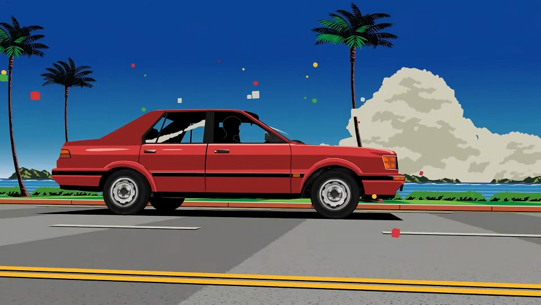

Perhaps it would be more appropiately to call this "why I styled my website the way I did", but that's a mouth full hahaha. To me, this website is my little corner in the near-infinite webway we call the internet. Like styling your own house, I want the design to look and feels good for me to "live in" as it were.
With that out of the way, let's dive right in!
After spending a day or so googling various color pallettes and looking through my mother's color pallette book, I found what I was looking for, The colors themselves are probably in the "retro 70s" category, dimmed in vibrance with a more warm accent. It doesn't scream for attention, yet you'll miss it when it's not there. The style reminds me a bit of the colors from games from 1990 - 2005 where simple colors are used with great results, which is fitting as I've played plenty of those games in my childhood.

Another great thing is that my favorite programming language (C) was developed and released by Dennis Richie as well as one of my favorite movies (S.T.A.L.K.E.R.) had public screening in the cinema at that time.
I can add in a fanpage for Noelle from Genshin Impact, a gallery of my Escape From Tarkov loadouts, a special webpage with all my MTG deckbuilds on there or a dedicated about me page with great detail on my background, but I don't need any of this for my website. What I really need is a place to show the article, a sidebar with enough information to give people an idea who I am, some links to show off other places and a banner to make the website feel mine.
Now that everything has been put in place, I can say I'm very happy with the results! I just need to make blockquotes look a bit better, but other than that I'm content with it. In the end, I think I'll didge the dark mode idea as it would require either the prefers-color-scheme media query (not supported on Internet Explorer 11) or run JS on the webpage to allow for swapping styles, which is an idea I don't like much either.
And with that, another problem is resolved hahahaha!